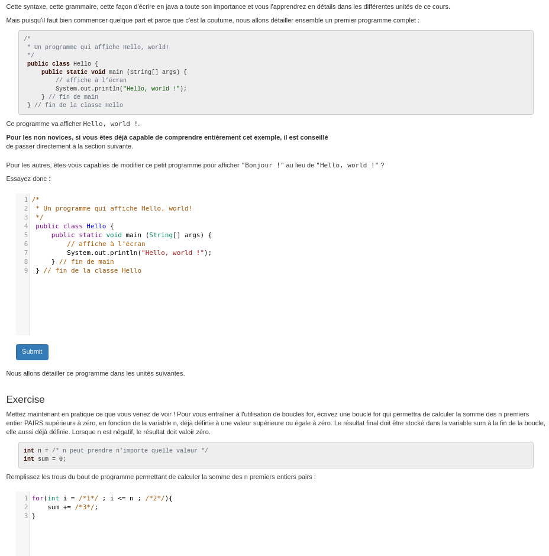

En 2017, un syllabus interactif a été developpé au sein du département et est encore en cours d'amélioration. Il a notamment été utilisé pour donner le cours de Python en première bac, et supporte aussi maintenant le syllabus du cours de Système Informatique.
Il y a plusieurs aspects au syllabus. D'une part, il y a la partie back-end qui consiste en diverse fonctionnalités (e.g. intégration d'INGInious, impression du syllabus, meilleur soumission sauvegardée). Un autre apsect est le contenu à proprement parlé : les pages du syllabus. Le syllabus alterne théorie, extrait de code illustrant la théorie et execrices INGInious. Voici à quoi ressemble une page, pour un cours de Java par exemple.
Il y a deux choses que vous pourrez faire en fonction de vos préférences : du backend ou du frontend.
Pour le backend, nous parlons de toutes les fonctionnalités à proprement parler du syllabus. Il y a encore beaucoup d'éléments à améliorer ou créer sur le syllabus. Par exemple, on peut imaginer permettre de créer des slides directement dans le syllabus pour les diffuser lors d'un cours. L'avantage c'est qu'il y a de la place pour faire les exercices en direct. Nous aurons une liste d'idées prêtes mais n'hésitez pas à venir avec les vôtres et on en discutera !
Il vous sera aussi possible de créer des exercices INGInious pour un cours destiné aux ingénieur de gestion, donné par Marco Saerens. Le cours sera en Python, une connaissance (même basique) de ce langage est donc préférable pour cette activité (mais pas recquise, les tâches simples ne demanderont pas une connaissance en profondeur !).
Premièrement, pour ceux qui feront des exercices, l'aspect pédagogique est non-négligeable. Créer un exercice demande, mis à part une maîtrise de la matière, une réflexion les difficultés que vont rencontrer les étudiants, comment ils vont aborder le problème, etc. C'est une tâche plus complexe qu'il n'y parait !
Ensuite, pour ceux qui se lanceront dans le back-end, vous aurez l'occasion de vous intégrer dans un projet que vous ne connaissez pas. Vous devrez apprendre la structure du code, comment les différentes parties intéragissent entres-elle, etc. De plus, le syllabus étant une application web, pour la plupart d'entre vous ça sera une nouvelle expérience. Si votre code est suffisament bon, il sera utilisé par des centaines d'étudiant à la rentrée !